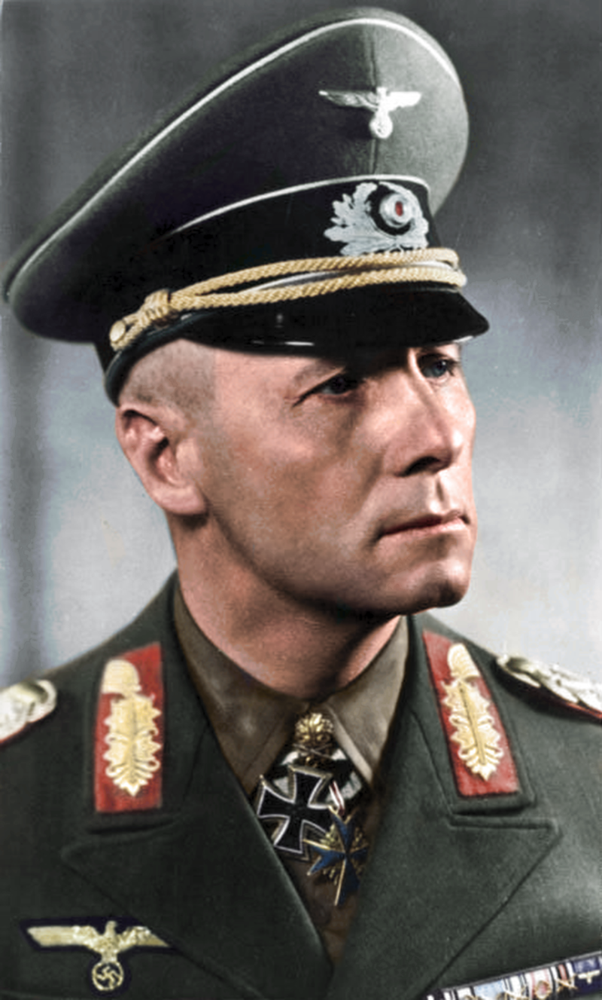

| Data i miejsce urodzenia: |
Heidenheim an der Brenz, Niemcy, 15 listopada 1891 |
| Data i miejsce śmierci: |
Herrlingen, Niemcy, 14 października 1944 |
| Erwin Rommel był najmłodszym niemieckim feldmarszałkiem (Generalfeldmarschall)
podczas II wojny światowej. Dowodził Afrika Korps – niemieckim korpusem ekspedycyjnym
w Afryce. Dzięki swoim znakomitym posunięciom i taktyce szybkiego przemieszczania wojsk
stał się żywą legendą wśród żołnierzy niemieckich, ale przede wszystkim wśród aliantów.
Ze względu na przebiegłość nazwany Lisem Pustyni (niem. Wüstenfuchs). Pod koniec wojny
(1944) został skierowany do Francji jako dowódca Grupy Armii B, z zadaniem poprawienia
umocnień w Normandii, w obliczu spodziewanej alianckiej inwazji. Miał syna.
|

Erwin Rommel
|